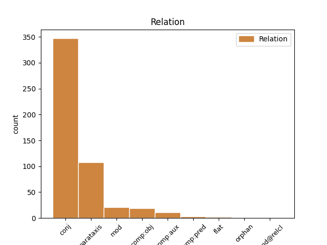
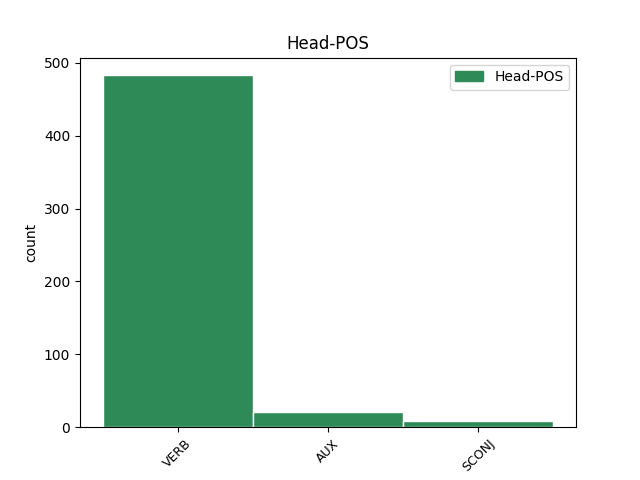
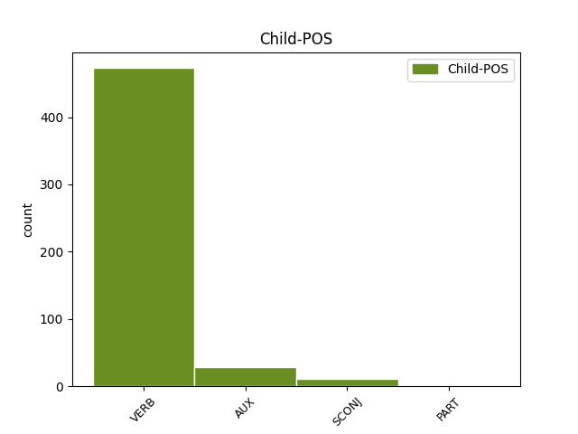

Distribution of features within this leaf



Agreement Rules sorted by frequency.
- When the dependent token is the conjunct(conj) of the head token, and the head token is VERB and the dependent token is VERB.
1 Перед _ _ _ _ 0 _ _ _
2 сеансом _ _ _ _ 0 _ _ _
3 на _ _ _ _ 0 _ _ _
4 Гороховой _ _ _ _ 0 _ _ _
5 присели _ _ _ _ 0 _ _ _
6 у _ _ _ _ 0 _ _ _
7 раскрытого _ _ _ _ 0 _ _ _
8 окна _ _ _ _ 0 _ _ _
9 в _ _ _ _ 0 _ _ _
10 кофейном _ _ _ _ 0 _ _ _
11 кафе _ _ _ _ 0 _ _ _
12 , _ _ _ _ 0 _ _ _
13 заказали заказать VERB _ Aspect=Perf|Mood=Ind|Number=Plur|Tense=Past|VerbForm=Fin|Voice=Act 0 _ _ _
14 фалафель _ _ _ _ 0 _ _ _
15 и _ _ _ _ 0 _ _ _
16 донер _ _ _ _ 0 _ _ _
17 , _ _ _ _ 0 _ _ _
18 стали стать VERB _ Aspect=Perf|Mood=Ind|Number=Plur|Tense=Past|VerbForm=Fin|Voice=Act 13 conj _ _
19 обсуждать _ _ _ _ 0 _ _ _
20 пиво _ _ _ _ 0 _ _ _
21 . _ _ _ _ 0 _ _ _
1 " _ _ _ _ 0 _ _ _
2 Саша _ _ _ _ 0 _ _ _
3 , _ _ _ _ 0 _ _ _
4 Саша _ _ _ _ 0 _ _ _
5 " _ _ _ _ 0 _ _ _
6 , _ _ _ _ 0 _ _ _
7 - _ _ _ _ 0 _ _ _
8 кричит кричать VERB _ Aspect=Imp|Mood=Ind|Number=Sing|Person=3|Tense=Pres|VerbForm=Fin|Voice=Act 0 _ _ _
9 , _ _ _ _ 0 _ _ _
10 - _ _ _ _ 0 _ _ _
11 " _ _ _ _ 0 _ _ _
12 что _ _ _ _ 0 _ _ _
13 же _ _ _ _ 0 _ _ _
14 вы _ _ _ _ 0 _ _ _
15 так _ _ _ _ 0 _ _ _
16 проходите проходить VERB _ Aspect=Imp|Mood=Ind|Number=Plur|Person=2|Tense=Pres|VerbForm=Fin|Voice=Act 8 parataxis _ SpaceAfter=No
17 ? _ _ _ _ 0 _ _ _
1 Это _ _ _ _ 0 _ _ _
2 Харьков _ _ _ _ 0 _ _ _
3 такой _ _ _ _ 0 _ _ _
4 тусовочный _ _ _ _ 0 _ _ _
5 ( _ _ _ _ 0 _ _ _
6 я _ _ _ _ 0 _ _ _
7 замечу _ _ _ _ 0 _ _ _
8 отдельно _ _ _ _ 0 _ _ _
9 , _ _ _ _ 0 _ _ _
10 что _ _ _ _ 0 _ _ _
11 в _ _ _ _ 0 _ _ _
12 половине _ _ _ _ 0 _ _ _
13 четвертого _ _ _ _ 0 _ _ _
14 утра _ _ _ _ 0 _ _ _
15 мы _ _ _ _ 0 _ _ _
16 уходили уходить VERB _ Aspect=Imp|Mood=Ind|Number=Plur|Tense=Past|VerbForm=Fin|Voice=Act 0 _ _ _
17 первыми _ _ _ _ 0 _ _ _
18 , _ _ _ _ 0 _ _ _
19 и _ _ _ _ 0 _ _ _
20 это _ _ _ _ 0 _ _ _
21 был быть AUX _ Aspect=Imp|Gender=Masc|Mood=Ind|Number=Sing|Tense=Past|VerbForm=Fin|Voice=Act 16 conj _ _
22 четверг _ _ _ _ 0 _ _ _
23 ! _ _ _ _ 0 _ _ _
24 ) _ _ _ _ 0 _ _ _
25 . _ _ _ _ 0 _ _ _
1 И _ _ _ _ 0 _ _ _
2 закончили закончить VERB _ Aspect=Perf|Mood=Ind|Number=Plur|Tense=Past|VerbForm=Fin|Voice=Act 0 _ _ _
3 его _ _ _ _ 0 _ _ _
4 только _ _ _ _ 0 _ _ _
5 тогда _ _ _ _ 0 _ _ _
6 , _ _ _ _ 0 _ _ _
7 когда _ _ _ _ 0 _ _ _
8 я _ _ _ _ 0 _ _ _
9 осознала осознать VERB _ Aspect=Perf|Gender=Fem|Mood=Ind|Number=Sing|Tense=Past|VerbForm=Fin|Voice=Act 2 mod _ SpaceAfter=No
10 , _ _ _ _ 0 _ _ _
11 что _ _ _ _ 0 _ _ _
12 мне _ _ _ _ 0 _ _ _
13 пора _ _ _ _ 0 _ _ _
14 ехать _ _ _ _ 0 _ _ _
15 в _ _ _ _ 0 _ _ _
16 аэропорт _ _ _ _ 0 _ _ _
17 . _ _ _ _ 0 _ _ _
1 Почему _ _ _ _ 0 _ _ _
2 я _ _ _ _ 0 _ _ _
3 в _ _ _ _ 0 _ _ _
4 этот _ _ _ _ 0 _ _ _
5 раз _ _ _ _ 0 _ _ _
6 не _ _ _ _ 0 _ _ _
7 запланировала запланировать VERB _ Aspect=Perf|Gender=Fem|Mood=Ind|Number=Sing|Tense=Past|VerbForm=Fin|Voice=Act 17 comp:obj _ _
8 хотя _ _ _ _ 0 _ _ _
9 бы _ _ _ _ 0 _ _ _
10 два _ _ _ _ 0 _ _ _
11 дня _ _ _ _ 0 _ _ _
12 , _ _ _ _ 0 _ _ _
13 а _ _ _ _ 0 _ _ _
14 не _ _ _ _ 0 _ _ _
15 один _ _ _ _ 0 _ _ _
16 , _ _ _ _ 0 _ _ _
17 затрудняюсь затрудняться VERB _ Aspect=Imp|Mood=Ind|Number=Sing|Person=1|Tense=Pres|VerbForm=Fin|Voice=Mid 0 _ _ _
18 сказать _ _ _ _ 0 _ _ _
19 . _ _ _ _ 0 _ _ _
1 он _ _ _ _ 0 _ _ _
2 вдруг _ _ _ _ 0 _ _ _
3 затосковал _ _ _ _ 0 _ _ _
4 о _ _ _ _ 0 _ _ _
5 точке _ _ _ _ 0 _ _ _
6 он _ _ _ _ 0 _ _ _
7 вдруг _ _ _ _ 0 _ _ _
8 закуковал _ _ _ _ 0 _ _ _
9 о _ _ _ _ 0 _ _ _
10 Риме _ _ _ _ 0 _ _ _
11 и _ _ _ _ 0 _ _ _
12 поглядите _ _ _ _ 0 _ _ _
13 стал _ _ _ _ 0 _ _ _
14 он _ _ _ _ 0 _ _ _
15 зримей _ _ _ _ 0 _ _ _
16 и _ _ _ _ 0 _ _ _
17 очутился _ _ _ _ 0 _ _ _
18 и _ _ _ _ 0 _ _ _
19 возник _ _ _ _ 0 _ _ _
20 он _ _ _ _ 0 _ _ _
21 был быть AUX VERB Aspect=Imp|Gender=Masc|Mood=Ind|Number=Sing|Tense=Past|VerbForm=Fin|Voice=Act 0 _ _ _
22 мечом _ _ _ _ 0 _ _ _
23 он _ _ _ _ 0 _ _ _
24 стал стать VERB VERB Aspect=Perf|Gender=Masc|Mood=Ind|Number=Sing|Tense=Past|VerbForm=Fin|Voice=Act 21 conj _ _
25 родник _ _ _ _ 0 _ _ _
1 8 _ _ _ _ 0 _ _ _
2 . _ _ _ _ 0 _ _ _
3 Противостоит _ _ _ _ 0 _ _ _
4 ей _ _ _ _ 0 _ _ _
5 мне _ _ _ _ 0 _ _ _
6 - _ _ _ _ 0 _ _ _
7 пох _ _ _ _ 0 _ _ _
8 - _ _ _ _ 0 _ _ _
9 баба _ _ _ _ 0 _ _ _
10 , _ _ _ _ 0 _ _ _
11 ребёнок _ _ _ _ 0 _ _ _
12 только _ _ _ _ 0 _ _ _
13 об _ _ _ _ 0 _ _ _
14 стену _ _ _ _ 0 _ _ _
15 не _ _ _ _ 0 _ _ _
16 долбиться _ _ _ _ 0 _ _ _
17 , _ _ _ _ 0 _ _ _
18 а _ _ _ _ 0 _ _ _
19 она _ _ _ _ 0 _ _ _
20 сидит сидеть VERB _ Aspect=Imp|Mood=Ind|Number=Sing|Person=3|Tense=Pres|VerbForm=Fin|Voice=Act 0 _ _ _
21 книжку _ _ _ _ 0 _ _ _
22 читает читать VERB _ Aspect=Imp|Mood=Ind|Number=Sing|Person=3|Tense=Pres|VerbForm=Fin|Voice=Act 20 comp:pred _ SpaceAfter=No
23 . _ _ _ _ 0 _ _ _
1 Эта _ _ _ _ 0 _ _ _
2 концовка _ _ _ _ 0 _ _ _
3 НИКАК _ _ _ _ 0 _ _ _
4 не _ _ _ _ 0 _ _ _
5 была быть AUX _ Aspect=Imp|Gender=Fem|Mood=Ind|Number=Sing|Tense=Past|VerbForm=Fin|Voice=Act 0 _ _ _
6 увязана _ _ _ _ 0 _ _ _
7 с _ _ _ _ 0 _ _ _
8 содержанием _ _ _ _ 0 _ _ _
9 романа _ _ _ _ 0 _ _ _
10 , _ _ _ _ 0 _ _ _
11 его _ _ _ _ 0 _ _ _
12 фабулой _ _ _ _ 0 _ _ _
13 , _ _ _ _ 0 _ _ _
14 смыслом _ _ _ _ 0 _ _ _
15 , _ _ _ _ 0 _ _ _
16 она _ _ _ _ 0 _ _ _
17 была быть AUX _ Aspect=Imp|Gender=Fem|Mood=Ind|Number=Sing|Tense=Past|VerbForm=Fin|Voice=Act 5 conj _ _
18 абсолютно _ _ _ _ 0 _ _ _
19 ненужной _ _ _ _ 0 _ _ _
20 , _ _ _ _ 0 _ _ _
21 никчемушной _ _ _ _ 0 _ _ _
22 , _ _ _ _ 0 _ _ _
23 ничем _ _ _ _ 0 _ _ _
24 не _ _ _ _ 0 _ _ _
25 оправданной _ _ _ _ 0 _ _ _
26 , _ _ _ _ 0 _ _ _
27 - _ _ _ _ 0 _ _ _
28 что _ _ _ _ 0 _ _ _
29 называется _ _ _ _ 0 _ _ _
30 , _ _ _ _ 0 _ _ _
31 ни _ _ _ _ 0 _ _ _
32 в _ _ _ _ 0 _ _ _
33 тын _ _ _ _ 0 _ _ _
34 , _ _ _ _ 0 _ _ _
35 ни _ _ _ _ 0 _ _ _
36 в _ _ _ _ 0 _ _ _
37 Красную _ _ _ _ 0 _ _ _
38 армию _ _ _ _ 0 _ _ _
39 , _ _ _ _ 0 _ _ _
40 пришей _ _ _ _ 0 _ _ _
41 кобыле _ _ _ _ 0 _ _ _
42 хвост _ _ _ _ 0 _ _ _
43 . _ _ _ _ 0 _ _ _
1 И _ _ _ _ 0 _ _ _
2 вот _ _ _ _ 0 _ _ _
3 в _ _ _ _ 0 _ _ _
4 голове _ _ _ _ 0 _ _ _
5 у _ _ _ _ 0 _ _ _
6 этой _ _ _ _ 0 _ _ _
7 девочки _ _ _ _ 0 _ _ _
8 - _ _ _ _ 0 _ _ _
9 рожавшей _ _ _ _ 0 _ _ _
10 , _ _ _ _ 0 _ _ _
11 общественницы _ _ _ _ 0 _ _ _
12 , _ _ _ _ 0 _ _ _
13 замужней _ _ _ _ 0 _ _ _
14 , _ _ _ _ 0 _ _ _
15 оказывается оказываться VERB _ Aspect=Imp|Mood=Ind|Number=Sing|Person=3|Tense=Pres|VerbForm=Fin|Voice=Mid 17 parataxis _ SpaceAfter=No
16 , _ _ _ _ 0 _ _ _
17 была быть AUX _ Aspect=Imp|Gender=Fem|Mood=Ind|Number=Sing|Tense=Past|VerbForm=Fin|Voice=Act 0 _ _ _
18 телегония _ _ _ _ 0 _ _ _
19 . _ _ _ _ 0 _ _ _
1 а _ _ _ _ 0 _ _ _
2 раньше _ _ _ _ 0 _ _ _
3 звался зваться VERB VERB Aspect=Imp|Gender=Masc|Mood=Ind|Number=Sing|Tense=Past|VerbForm=Fin|Voice=Mid 0 _ _ _
4 он _ _ _ _ 0 _ _ _
5 Ермолов _ _ _ _ 0 _ _ _
6 был быть AUX VERB Aspect=Imp|Gender=Masc|Mood=Ind|Number=Sing|Tense=Past|VerbForm=Fin|Voice=Act 3 parataxis _ _
7 князя _ _ _ _ 0 _ _ _
8 Меньшикова _ _ _ _ 0 _ _ _
9 друг _ _ _ _ 0 _ _ _
1 Хочу хотеть VERB _ Aspect=Imp|Mood=Ind|Number=Sing|Person=1|Tense=Pres|VerbForm=Fin|Voice=Act 0 _ _ _
2 - _ _ _ _ 0 _ _ _
3 хочу _ _ _ _ 0 _ _ _
4 - _ _ _ _ 0 _ _ _
5 хочу хотеть VERB _ Aspect=Imp|Mood=Ind|Number=Sing|Person=1|Tense=Pres|VerbForm=Fin|Voice=Act 1 flat _ _
6 их _ _ _ _ 0 _ _ _
7 ! _ _ _ _ 0 _ _ _
8 💜 _ _ _ _ 0 _ _ _
1 Их _ _ _ _ 0 _ _ _
2 отличает отличать VERB _ Aspect=Imp|Mood=Ind|Number=Sing|Person=3|Tense=Pres|VerbForm=Fin|Voice=Act 0 _ _ _
3 харизма _ _ _ _ 0 _ _ _
4 , _ _ _ _ 0 _ _ _
5 приятная _ _ _ _ 0 _ _ _
6 внешность _ _ _ _ 0 _ _ _
7 , _ _ _ _ 0 _ _ _
8 живой _ _ _ _ 0 _ _ _
9 аналитический _ _ _ _ 0 _ _ _
10 ум _ _ _ _ 0 _ _ _
11 , _ _ _ _ 0 _ _ _
12 хорошее _ _ _ _ 0 _ _ _
13 воспитание _ _ _ _ 0 _ _ _
14 и _ _ _ _ 0 _ _ _
15 манеры _ _ _ _ 0 _ _ _
16 , _ _ _ _ 0 _ _ _
17 за _ _ _ _ 0 _ _ _
18 которыми _ _ _ _ 0 _ _ _
19 всегда _ _ _ _ 0 _ _ _
20 спрятан _ _ _ _ 0 _ _ _
21 сильный _ _ _ _ 0 _ _ _
22 взгляд _ _ _ _ 0 _ _ _
23 , _ _ _ _ 0 _ _ _
24 в _ _ _ _ 0 _ _ _
25 котором _ _ _ _ 0 _ _ _
26 едва _ _ _ _ 0 _ _ _
27 просматривается просматриваться VERB _ Aspect=Imp|Mood=Ind|Number=Sing|Person=3|Tense=Pres|VerbForm=Fin|Voice=Mid 2 mod@relcl _ _
28 небольшая _ _ _ _ 0 _ _ _
29 грусть _ _ _ _ 0 _ _ _
30 . _ _ _ _ 0 _ _ _
1 Кто _ _ _ _ 0 _ _ _
2 не _ _ _ _ 0 _ _ _
3 успел успеть VERB _ Aspect=Perf|Gender=Masc|Mood=Ind|Number=Sing|Tense=Past|VerbForm=Fin|Voice=Act 6 orphan _ _
4 посмотреть _ _ _ _ 0 _ _ _
5 , _ _ _ _ 0 _ _ _
6 может мочь VERB _ Aspect=Imp|Mood=Ind|Number=Sing|Person=3|Tense=Pres|VerbForm=Fin|Voice=Act 0 _ _ _
7 это _ _ _ _ 0 _ _ _
8 сделать _ _ _ _ 0 _ _ _
9 . _ _ _ _ 0 _ _ _
1 все _ _ _ _ 0 _ _ _
2 утопленники _ _ _ _ 0 _ _ _
3 вышли _ _ _ _ 0 _ _ _
4 почесались _ _ _ _ 0 _ _ _
5 на _ _ _ _ 0 _ _ _
6 закат _ _ _ _ 0 _ _ _
7 и _ _ _ _ 0 _ _ _
8 поехали поехать VERB VERB Aspect=Perf|Mood=Ind|Number=Plur|Tense=Past|VerbForm=Fin|Voice=Act 0 _ _ _
9 на _ _ _ _ 0 _ _ _
10 дышле _ _ _ _ 0 _ _ _
11 кто _ _ _ _ 0 _ _ _
12 был быть AUX VERB Aspect=Imp|Gender=Masc|Mood=Ind|Number=Sing|Tense=Past|VerbForm=Fin|Voice=Act 8 mod _ _
13 беден _ _ _ _ 0 _ _ _
14 кто _ _ _ _ 0 _ _ _
15 богат _ _ _ _ 0 _ _ _
Disagree Examples:
1 Их _ _ _ _ 0 _ _ _
2 столик _ _ _ _ 0 _ _ _
3 - _ _ _ _ 0 _ _ _
4 накройся накроться VERB _ Aspect=Imp|Mood=Imp|Number=Sing|Person=2|VerbForm=Fin|Voice=Mid 5 parataxis _ _
5 сгорит сгореть VERB _ Aspect=Perf|Mood=Ind|Number=Sing|Person=3|Tense=Fut|VerbForm=Fin|Voice=Act 0 _ _ _
6 в _ _ _ _ 0 _ _ _
7 огне _ _ _ _ 0 _ _ _
8 , _ _ _ _ 0 _ _ _
9 иссякнет _ _ _ _ 0 _ _ _
10 поток _ _ _ _ 0 _ _ _
11 воды _ _ _ _ 0 _ _ _
12 . _ _ _ _ 0 _ _ _
1 Бриллианты _ _ _ _ 0 _ _ _
2 мои _ _ _ _ 0 _ _ _
3 — _ _ _ _ 0 _ _ _
4 стекла _ _ _ _ 0 _ _ _
5 да _ _ _ _ 0 _ _ _
6 лузга _ _ _ _ 0 _ _ _
7 , _ _ _ _ 0 _ _ _
8 А _ _ _ _ 0 _ _ _
9 поди _ _ _ _ 0 _ _ _
10 , _ _ _ _ 0 _ _ _
11 погляди поглядеть VERB _ Aspect=Perf|Mood=Imp|Number=Sing|Person=2|VerbForm=Fin|Voice=Act 0 _ _ _
12 , _ _ _ _ 0 _ _ _
13 как _ _ _ _ 0 _ _ _
14 они _ _ _ _ 0 _ _ _
15 горят гореть VERB _ Aspect=Imp|Mood=Ind|Number=Plur|Person=3|Tense=Pres|VerbForm=Fin|Voice=Act 11 comp:obj _ SpaceAfter=No
16 ! _ _ _ _ 0 _ _ _
1 Я _ _ _ _ 0 _ _ _
2 бы бы AUX _ Mood=Cnd 0 _ _ _
3 так _ _ _ _ 0 _ _ _
4 не _ _ _ _ 0 _ _ _
5 смог смочь VERB _ Aspect=Perf|Gender=Masc|Mood=Ind|Number=Sing|Tense=Past|VerbForm=Fin|Voice=Act 2 comp:aux _ SpaceAfter=No
6 ... _ _ _ _ 0 _ _ _
1 Лучше _ _ _ _ 0 _ _ _
2 всего _ _ _ _ 0 _ _ _
3 скажите сказать VERB _ Aspect=Perf|Mood=Imp|Number=Plur|Person=2|VerbForm=Fin|Voice=Act 0 _ _ _
4 это _ _ _ _ 0 _ _ _
5 юбиляр _ _ _ _ 0 _ _ _
6 или _ _ _ _ 0 _ _ _
7 вы _ _ _ _ 0 _ _ _
8 слили слить VERB _ Aspect=Imp|Mood=Ind|Number=Plur|Tense=Past|VerbForm=Fin|Voice=Act 3 comp:obj _ _
9 за _ _ _ _ 0 _ _ _
10 бабло _ _ _ _ 0 _ _ _
11 на _ _ _ _ 0 _ _ _
12 выборах _ _ _ _ 0 _ _ _
13 прокурорам _ _ _ _ 0 _ _ _
14 беглым _ _ _ _ 0 _ _ _
15 и _ _ _ _ 0 _ _ _
16 действующим _ _ _ _ 0 _ _ _
1 Одно _ _ _ _ 0 _ _ _
2 я _ _ _ _ 0 _ _ _
3 скажу _ _ _ _ 0 _ _ _
4 тебе _ _ _ _ 0 _ _ _
5 , _ _ _ _ 0 _ _ _
6 камрад _ _ _ _ 0 _ _ _
7 / _ _ _ _ 0 _ _ _
8 пелотка _ _ _ _ 0 _ _ _
9 : _ _ _ _ 0 _ _ _
10 никогда _ _ _ _ 0 _ _ _
11 , _ _ _ _ 0 _ _ _
12 слышишь слышать VERB _ Aspect=Imp|Mood=Ind|Number=Sing|Person=2|Tense=Pres|VerbForm=Fin|Voice=Act 16 mod _ SpaceAfter=No
13 , _ _ _ _ 0 _ _ _
14 никогда _ _ _ _ 0 _ _ _
15 не _ _ _ _ 0 _ _ _
16 доверяй доверять VERB _ Aspect=Imp|Mood=Imp|Number=Sing|Person=2|VerbForm=Fin|Voice=Act 0 _ _ _
17 единороссам _ _ _ _ 0 _ _ _